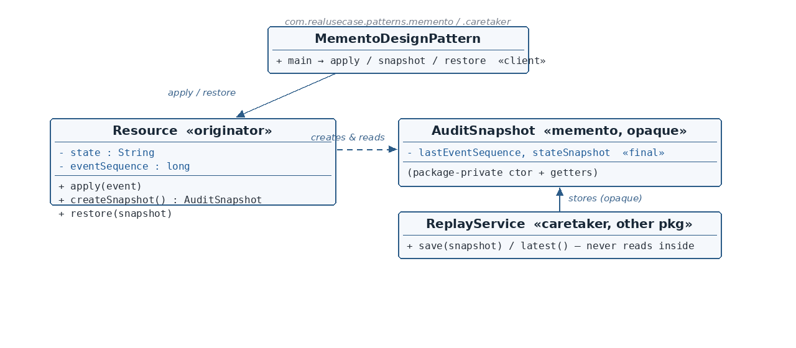

Resource.java — the Originator
☕ 4 min read · 🎬 Video walkthrough · 📊 UML diagram · 💻 Runnable code
⚡ In a nutshell — Capture an object's internal state in a snapshot that can restore it later — without violating encapsulation.
Capture an object's internal state in a snapshot that can restore it later — without violating encapsulation. Three roles: the Originator creates and restores its own snapshots; the Memento is the opaque snapshot; the Caretaker stores mementos but can never look inside them.
The encapsulation rule is the pattern's soul: only the originator may read a memento's contents.
Event-sourced systems fold events (created, updated, deleted) into a resource's state. Replaying from event zero gets expensive, and risky bulk operations need a rollback point. The production answer is audit snapshots: checkpoint the state and the last event sequence, store checkpoints in a replay service, and restore when needed. Crucially, the replay service must never interpret a snapshot's payload — that knowledge belongs to the resource alone. This module enforces that with Java's own access control: the memento's constructor and getters are package-private, and the caretaker lives in a different package — it cannot compile code that peeks inside.
Resource (originator) applies events, accumulating state and eventSequence. It creates snapshots of itself and restores from them.AuditSnapshot (memento) is immutable, with package-private constructor and getters — only same-package code (i.e., Resource) can create or read one.ReplayService (caretaker) lives in ...caretaker — a different package — so it can only store and return snapshots as opaque tokens.
Reading the diagram: the originator creates and reads snapshots (dashed arrow). The caretaker, in another package, only stores them — the "opaque" note is enforced by the compiler, not convention.
Resource — Originator — owns the state, creates/restores snapshots.AuditSnapshot — Memento — immutable, package-private access: opaque to everyone but the originator.ReplayService — Caretaker — stores snapshots in another package; structurally cannot read them.MementoDesignPattern — Client — checkpoint, mutate, roll back.public class Resource {
private String state = "";
private long eventSequence = 0;
public void apply(String event) {
state = state.isEmpty() ? event : state + "," + event;
eventSequence++;
}
public AuditSnapshot createSnapshot() {
return new AuditSnapshot(eventSequence, state);
}
public void restore(AuditSnapshot snapshot) {
this.state = snapshot.getStateSnapshot();
this.eventSequence = snapshot.getLastEventSequence();
}
public String getState() { return state; }
}
apply folds an event into the accumulated state (a comma-joined log standing in for real reduced state) and bumps the sequence — a miniature event-sourced aggregate.createSnapshot freezes both fields into a memento. restore writes both back — a total restore; partial restores are a classic memento bug this avoids.Resource can call the snapshot's package-private members because they share the memento package — the originator is the only class with that privilege.AuditSnapshot.java — the Mementopublic class AuditSnapshot {
private final long lastEventSequence;
private final String stateSnapshot;
AuditSnapshot(long lastEventSequence, String stateSnapshot) { ... }
long getLastEventSequence() { ... }
String getStateSnapshot() { ... }
}
final — a snapshot never changes after creation.public on the constructor or getters — package-private. This is the pattern's encapsulation rule, enforced by the compiler: any class outside the memento package that tries snapshot.getStateSnapshot() fails to compile. The class itself stays public so other packages can hold references — they just can't see inside.ReplayService.java — the Caretakerpackage com.realusecase.patterns.caretaker;
public class ReplayService {
private final List<AuditSnapshot> snapshots = new ArrayList<>();
public void save(AuditSnapshot snapshot) { snapshots.add(snapshot); }
public AuditSnapshot latest() { return snapshots.get(snapshots.size() - 1); }
}
caretaker, not memento. The caretaker stores and returns snapshots — and that is all it can do. Calling any getter on a snapshot would be a compile error here. Opaqueness by construction.MementoDesignPattern.java — the clientresource.apply("created");
resource.apply("updated");
replayService.save(resource.createSnapshot()); // checkpoint at 2 events
resource.apply("deleted");
System.out.println("current: " + resource.getState()); // created,updated,deleted
resource.restore(replayService.latest());
System.out.println("restored: " + resource.getState()); // created,updated
deleted event is gone from the state, and the sequence counter is back to 2 as well.ReplayService out is what actually locks the door.$ java -cp target/classes com.realusecase.patterns.MementoDesignPattern
current: created,updated,deleted
restored: created,updated
Snapshot what only you may see; let others carry it, never read it.
👏 Found this useful? Give it a few claps so more developers discover it, and follow for the whole series — every article ships with a UML diagram, runnable code, a narrated video, and a companion PDF. Happy building! 🚀